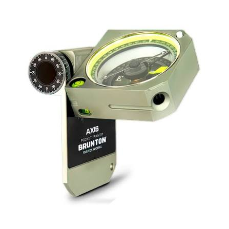
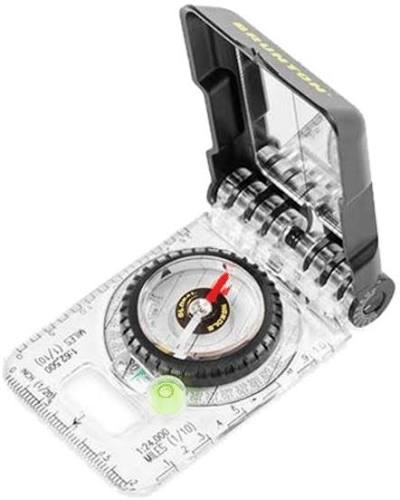
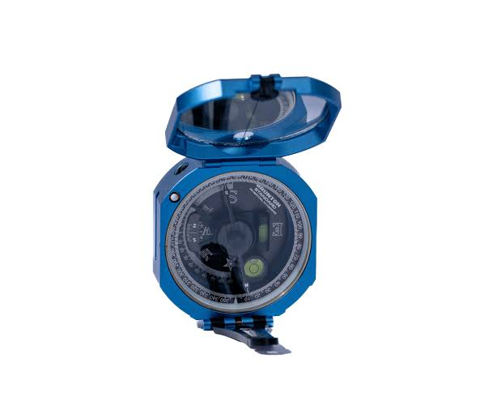

Alta Precisión
Lecturas acimutales exactas para mapeo geológico y mediciones estructurales de rumbo y buzamiento.
Ofrecemos una amplia gama de modelos diseñados para satisfacer las exigencias del cartografiado geológico en campo y la evaluación estructural.
Ver Catálogo
Lecturas acimutales exactas para mapeo geológico y mediciones estructurales de rumbo y buzamiento.
Sellado contra polvo y humedad, con cuerpo de aluminio anodizado de alta visibilidad y duración.
Mecanismo de inducción que estabiliza la aguja rápidamente para tomar datos expeditos en campo.



"Su precisión en levantamientos geomecánicos es insuperable. Indispensable en mapeo de campo."
"La durabilidad de las brújulas Brunton resiste el trabajo pesado en minería subterránea."